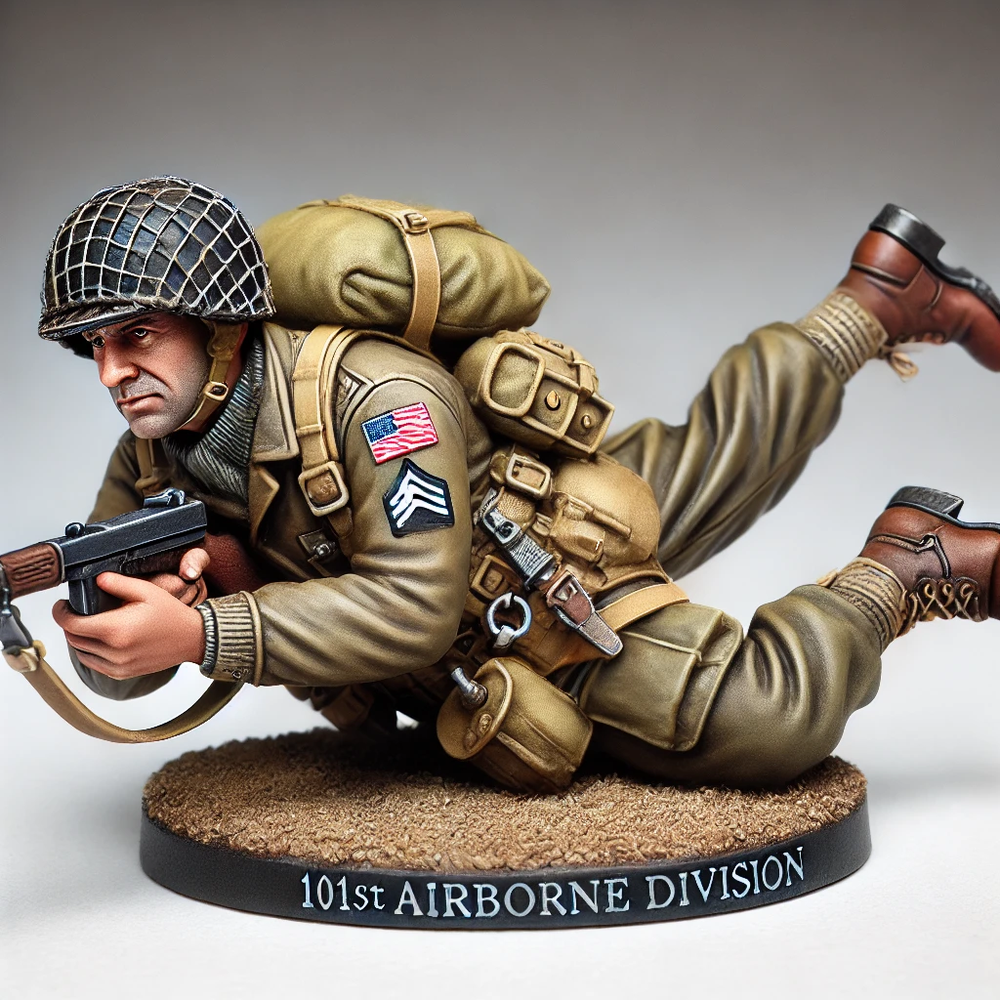
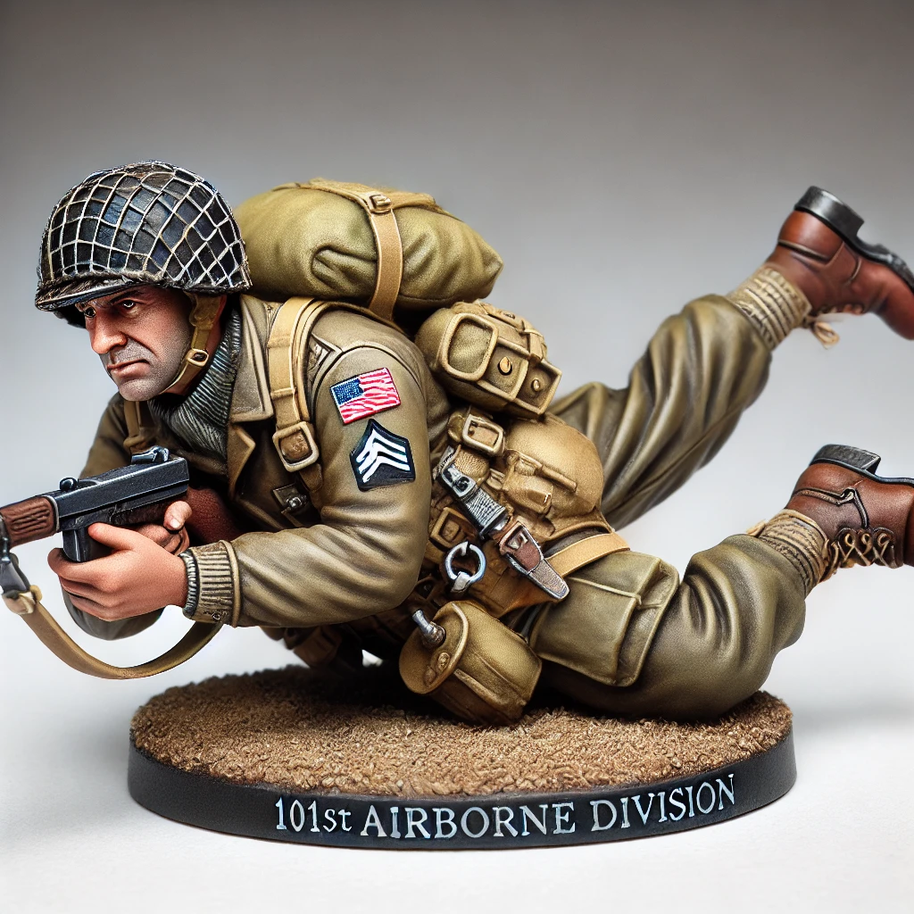

Bio
Captain Tom Greene served in the 101st Airborne during the Second World War. Known for his calm leadership under fire, Greene was a key figure in securing the causeways leading inland from Utah Beach following the D-Day landings.
Uniform & Equipment
Wearing the M1942 Paratrooper uniform, Tom is equipped with the M1 Garand rifle, standard issue jump boots, and webbing suited for airborne operations. His helmet features a net cover and captain’s rank insignia stencilled on the rear.
Campaign
This miniature represents Cpt. Tom Greene during Operation Overlord, June 1944 – the Normandy invasion. The uniform reflects standard loadout for pathfinders and lead officers of the 101st during the early stages of the assault.
← Back to Catalogue